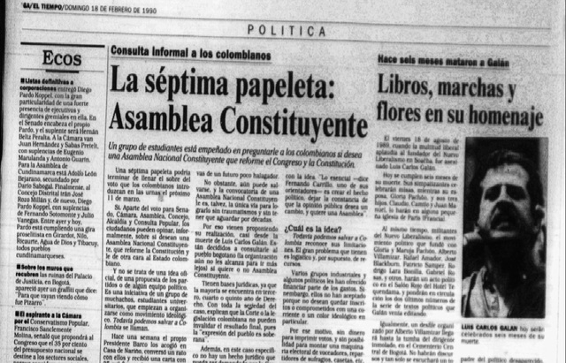
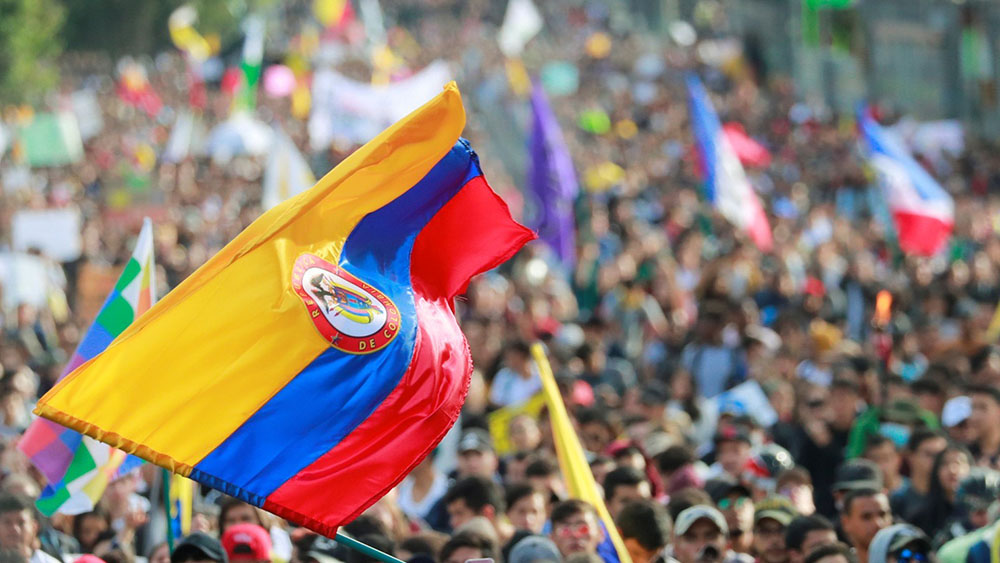
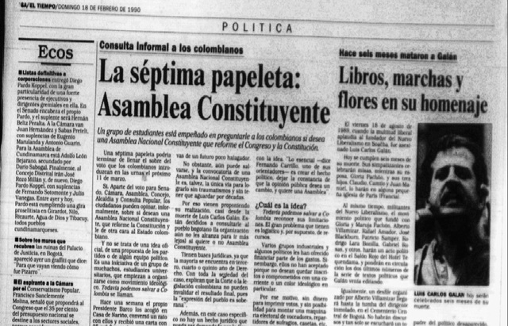
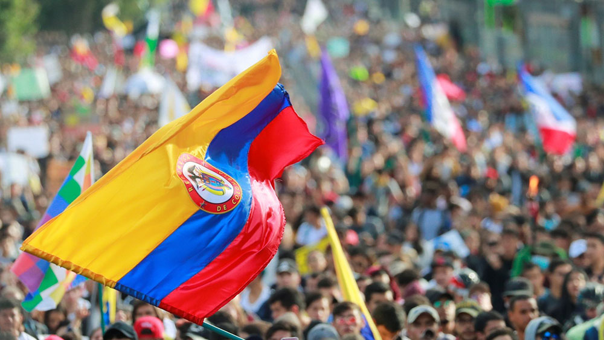

El 5 de agosto de 1886, se promulgó una nueva constitución política para Colombia, la cual fue impulsada
por
el presidente electo Rafael Núñez (1825 - 1894). Esta constitución estuvo fuertemente influenciada por
los principios
ideológicos del partido conservador.
Esta reforma constitucional se llevó a cabo a puertas cerradas, sin contar con la participación de los
diferentes actores políticos y la ciudadanía en general. La constitución resultante centralizó el poder
y
estableció la religión católica como la oficial.
Más Detalles
Tuvo lugar entre el 23 de enero y el 15 de marzo y se desarrolló a lo largo de tres grandes momentos en
esos cortos dos meses que duró. Un intento de golpe de Estado al presidente Caro, el cual fracasó de
manera rotunda, y las batallas de La Tribuna (Cundinamarca) y Enciso (Santander).
el gobierno de Miguel Antonio Caro había encontrado formas y estrategias para restringirle posibilidades
a políticos de otros partidos y quedarse el poder para miembros de su propio movimiento el Partido
Nacional y su ideología la Regeneración, líderes del partido liberal al quedarse convencidos de ello,
planearon una revuelta para llegar a un posible golpe de Estado.
Más Detalles
La Guerra de los Mil Días (1899-1902) fue un conflicto armado entre facciones liberales y conservadoras. Comenzó como una revuelta contra el gobierno conservador y resultó en una devastadora guerra civil. La intervención extranjera y la firma del Tratado de Neerlandia en 1902 pusieron fin al conflicto, pero dejaron a Colombia en un estado de desolación y tensiones políticas duraderas. La guerra tuvo un impacto profundo en la historia y la política del país. Más Detalles
En 1903, Panamá se separó de Colombia mediante una declaración de independencia respaldada por Estados Unidos. Esta separación condujo a la firma del Tratado Hay-Bunau Varilla, otorgando a los EE.UU. el control exclusivo del Canal de Panamá y marcando un hito importante en la historia de América Latina y las relaciones internacionales. Más Detalles
La Masacre de las Bananeras, ocurrida el 6 de diciembre de 1928 en Ciénaga, Colombia, fue un violento enfrentamiento entre trabajadores en huelga de la United Fruit Company y el ejército colombiano. Los trabajadores protestaban por las pésimas condiciones laborales y los bajos salarios impuestos por la poderosa compañía estadounidense. La UFC contó con el respaldo del gobierno local, que respondió militarmente, resultando en una tragedia en la que se estima murieron entre 47 y 2,000 personas. Este suceso marcó un hito en la lucha por los derechos laborales en Colombia y desencadenó una ola de indignación tanto a nivel nacional como internacional. Más Detalles
El magnicidio de Jorge Eliécer Gaitán fue un acontecimiento trágico que ocurrió el 9 de abril de 1948 en Bogotá, Colombia. Gaitán era un influyente líder político y abogado conocido por su defensa de los derechos de los trabajadores y su lucha contra la corrupción. Ese día, Gaitán fue asesinado a tiros en pleno centro de la ciudad por Juan Roa Sierra, un hombre con problemas mentales. Más Detalles
El "Bogotazo" fue un violento estallido social ocurrido el 9 de abril de 1948 en Bogotá, Colombia, como resultado del asesinato del líder político Jorge Eliécer Gaitán. Tras su muerte, la ciudad se sumió en el caos con disturbios, saqueos y enfrentamientos que se extendieron por varios días. Este evento marcó el inicio de un período de violencia política conocido como "La Violencia", que perduró por más de una década en Colombia, dejando un profundo impacto en la historia del país y en su desarrollo político y social. Más Detalles
Las FARC (Fuerzas Armadas Revolucionarias de Colombia) surgieron en 1964 como un grupo guerrillero marxista-leninista que buscaba combatir la desigualdad social en Colombia, inicialmente mediante la lucha armada y posteriormente a través de procesos de paz. En 2016, firmaron un histórico acuerdo de paz con el gobierno, desmovilizándose y transformándose en un partido político legal. Por otro lado, el ELN (Ejército de Liberación Nacional), fundado en el mismo año, adoptó una orientación guevarista y de teología de liberación para enfrentar lo que percibían como opresión imperialista y explotación económica. Su objetivo actual es lograr una transformación social y política a través del diálogo y la negociación con el gobierno colombiano, aunque su historia ha estado marcada por procesos de paz intermitentes y períodos de violencia. Más Detalles
El Movimiento 19 de Abril (M-19) surgió en Colombia en 1970 como una guerrilla urbana con raíces en el nacionalismo y el socialismo democrático. Su formación fue respuesta a las irregularidades en las elecciones presidenciales de dicho año, donde el oficialista del Frente Nacional, Misael Pastrana Borrero, se impuso sobre el candidato opositor Gustavo Rojas Pinilla, en medio de denuncias de un fraude electoral orquestado por el gobierno y los partidos tradicionales. Más Detalles
La toma del palacio de Justicia, denominada Operación Antonio Nariño por los Derechos del Hombre, fue un asalto perpetrado en Bogotá, Colombia, el miércoles 6 de noviembre de 1985 por un comando de guerrilleros del Movimiento 19 de abril (M-19) al Palacio de Justicia. El M-19 mantuvo a cerca de 350 rehenes entre magistrados, consejeros de Estado, servidores judiciales, empleados y visitantes del Palacio de Justicia. Dicha incursión fue seguida de la reacción de la Policía Nacional y el Ejército Nacional, rodeando el edificio e iniciando una operación de retoma del mismo que se extendió hasta el jueves 7 de noviembre de 1985. Más Detalles
Magnicidio del político colombiano Luis Carlos Galán, líder del Nuevo Liberalismo, ocurrido el 18 de agosto de 1989 poco antes de comenzar su discurso en un evento público electoral en Soacha, Cundinamarca. El asesinato sería llevado a cabo por narcotraficantes del Cartel de Medellín, Los Extraditables, liderados por Pablo Escobar y el político liberal al servicio de la mafia Alberto Santofimio. La mafia asesinó a Galán por estar a favor de la extradición de narcotraficantes a los Estados Unidos y la lucha frontal que pregonaba contra el narcotráfico. En trasfondo, Santofimio Botero buscó deshacerse de su contrincante político para las Elecciones presidenciales de 1990. Más Detalles
La Séptima papeleta fue una propuesta que surgió a partir de un movimiento estudiantil, para depositar una papeleta en apoyo para realizar una nueva Constitución Política, ante las elecciones del 11 de marzo de 1990 de Colombia que se elegía Senado, Cámara de Representantes, Asamblea Departamental, Juntas Administradoras Locales (JAL), Concejo Municipal, Alcaldes (las elecciones para gobernador solo fueron a partir de la constitución del 91). Más Detalles
La Constitución Política de la República de Colombia de 1991 es la carta magna de Colombia. Fue promulgada en la Gaceta Constitucional número 114 del domingo 4 de julio de 1991, y también se le conoce como la Constitución de los Derechos Humanos. Reemplazó a la Constitución Política de 1886 y fue expedida durante la presidencia del liberal César Gaviria. Más Detalles